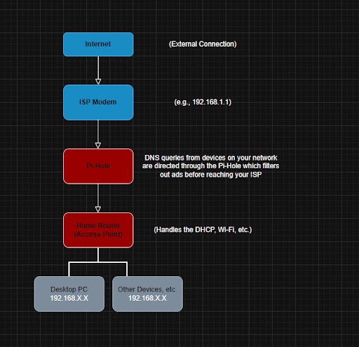
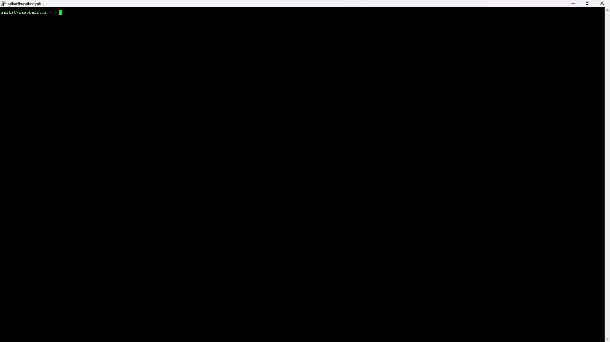
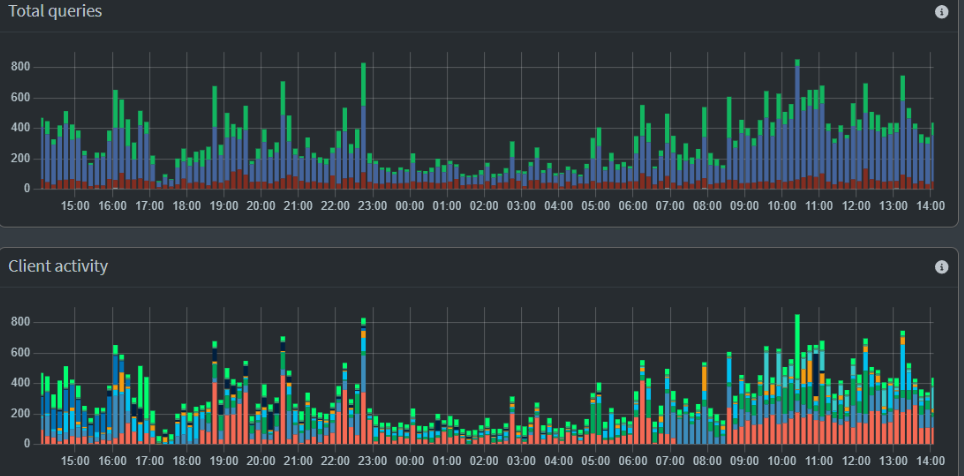

First, I downloaded Raspberry Pi Imager from their website so that I could flash an OS onto my microSD card.
The Raspberry Pi Zero 2 W has one microSD card slot, two micro-USB slots for power and data, and a camera control port (not used in this project). Once powered on, I realized that the board did not have any USB ports, so I had to order an adapter to let me connect a keyboard to the terminal.
Next, I had to figure out the basics of how Pi-Hole works.
After I had installed the OS and inserted it into my Raspberry Pi, I was now ready to install Pi-Hole using the terminal. I went to their main website (https://pi-hole.net) and followed their step-by-step guide on how to install Pi-Hole by using the curl command. Once it was done installing, I got a password to use the admin panel and began
using Secure Shell (SSH) to connect to the Pi-Hole instead of connecting the Pi-Hole to a monitor and using it. I used PuTTY on my main computer and used the IP address of the Pi-Hole to connect to it. (Finding your IP is as easy as typing “ip a” into the terminal and reading the numbers that come after “inet,” like 192.168.68.71.) This meant that I could now copy and paste commands into the terminal instead of having to painfully type them manually. 
Now, I had to configure the blocklists in the Pi-Hole and add lists of domains and trackers that the Pi-Hole should block. I used StevenBlack’s Unified Hosts List (https://github.com/StevenBlack/hosts) and https://firebog.net to find lists that I could paste into my Pi-Hole. On the Firebog list, all I needed to do was copy the link and paste it into the Lists part of the Admin Web Interface. Then, by pasting that link into the address search bar and clicking “Add Blocklist” (instead of “Add Allowlist”), the trackers and domains would be properly blocked.
At first, the Pi-hole dashboard graph showed no activity after setup. I realized this was because clients on my network weren't directed to use it for DNS. By setting the Pi-hole as the default DHCP server on my router (or configuring the router's DHCP to assign the Pi-hole's IP as DNS), traffic began flowing through it, and the graphs showed traffic through the Pi-Hole. I also reserved a static IP for the Raspberry Pi to guarantee its address wouldn't change.
